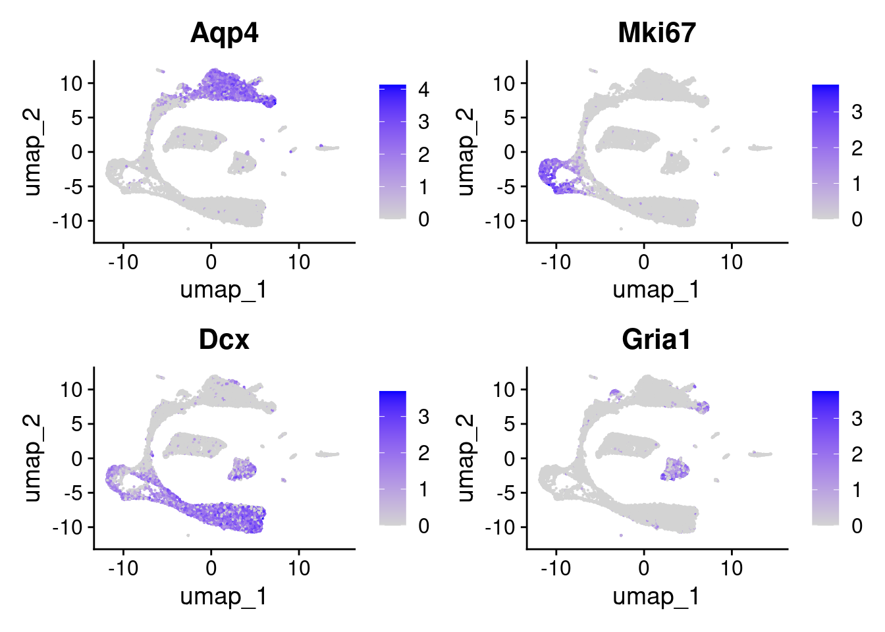
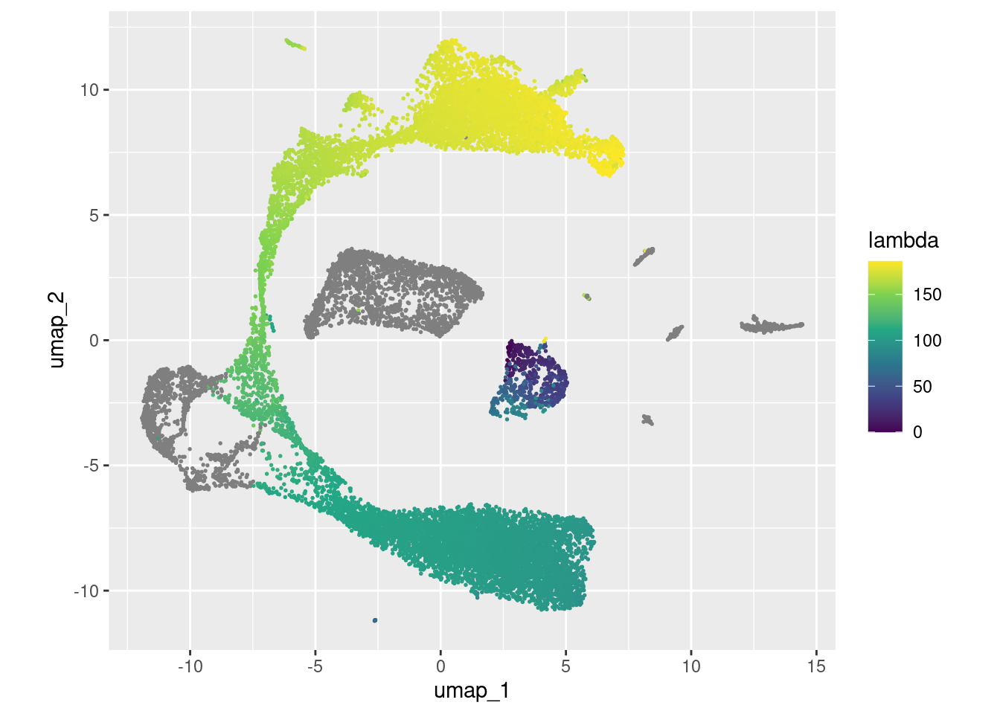
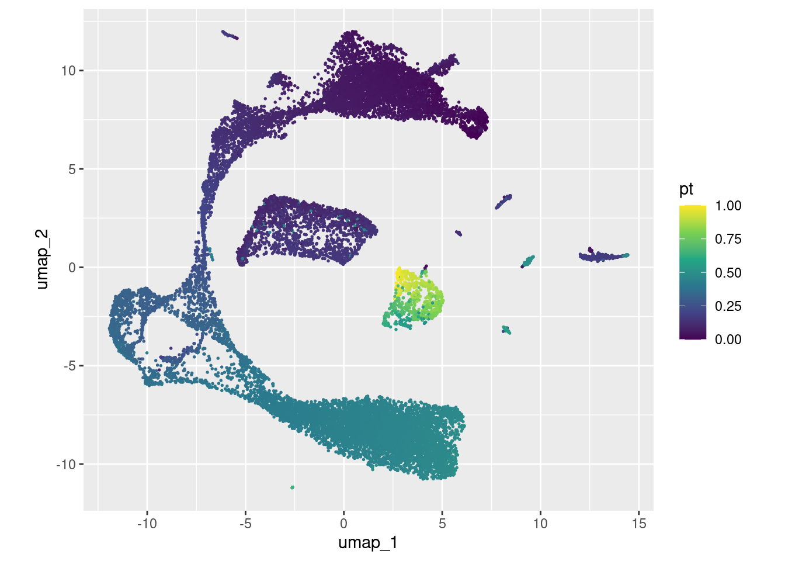
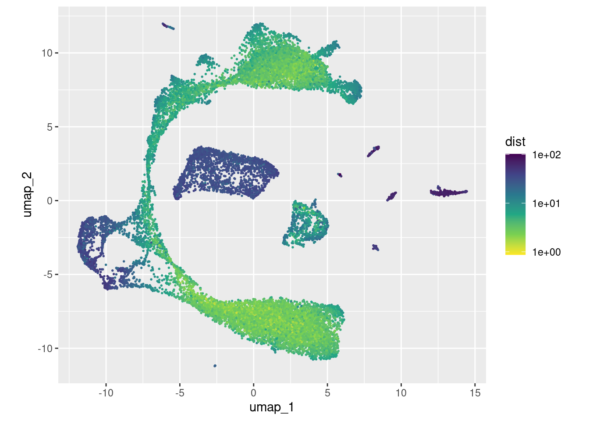
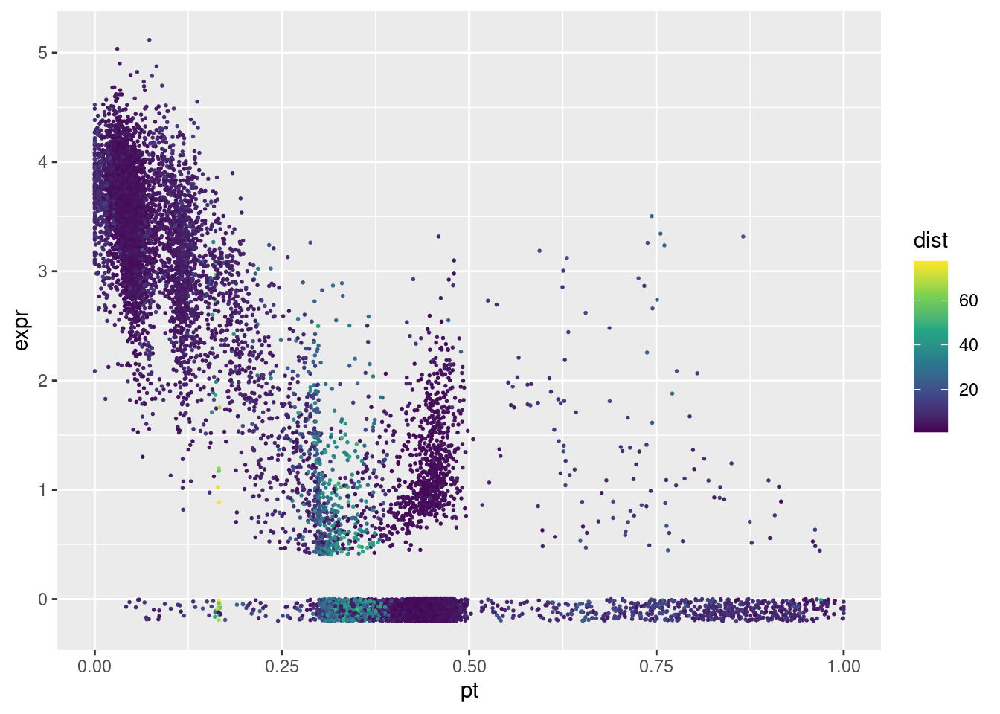
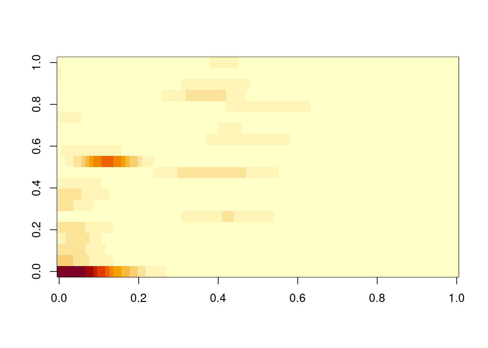
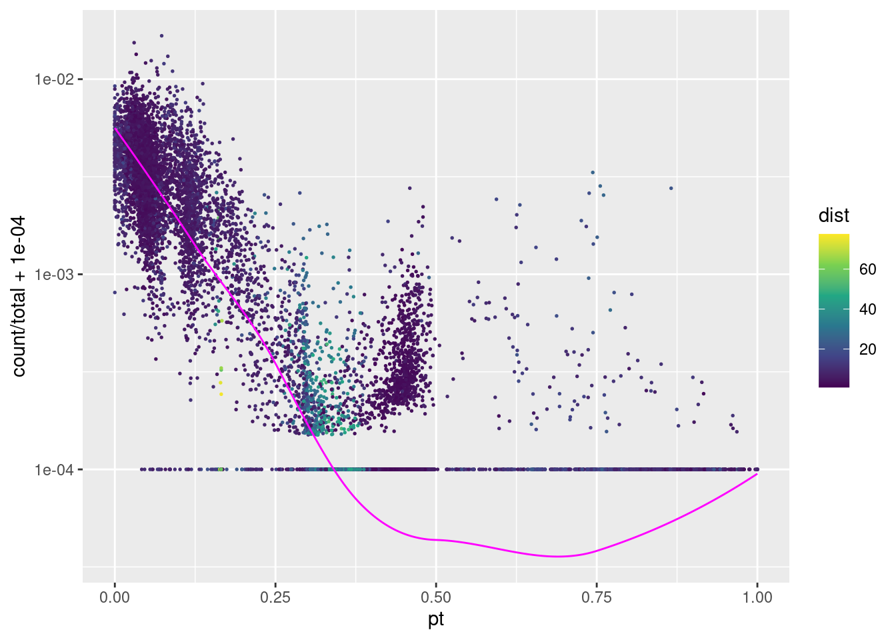
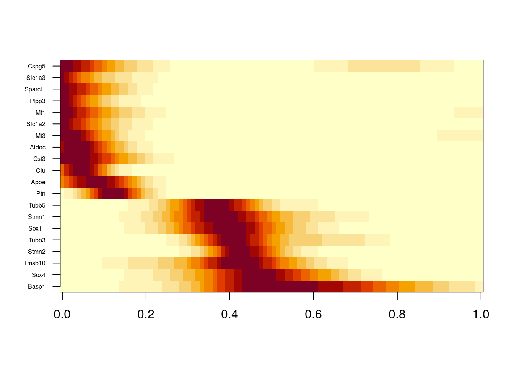

suppressPackageStartupMessages({
library( tidyverse )
library( Matrix )
library( sparseMatrixStats )
library( Seurat ) })
ReadMtx( "~/Downloads/ifnagrko/ifnagrko_raw_counts.mtx.gz",
"~/Downloads/ifnagrko/ifnagrko_obs.csv",
"~/Downloads/ifnagrko/ifnagrko_var.csv",
cell.sep=",", feature.sep=",", skip.cell=1, skip.feature=1,
mtx.transpose=TRUE) -> count_matrixTrajectories
Standard analysis
We load our usual example data
count_matrix %>%
CreateSeuratObject() %>%
NormalizeData() %>%
FindVariableFeatures() %>%
ScaleData() %>%
RunPCA( npcs=20 ) %>%
FindNeighbors( dims=1:20 ) %>%
FindClusters( resolution=0.5 ) %>%
RunUMAP( dims=1:20 ) -> seuWarning: Feature names cannot have underscores ('_'), replacing with dashes
('-')Normalizing layer: countsFinding variable features for layer countsCentering and scaling data matrixPC_ 1
Positive: Apoe, Aldoc, Sparcl1, Sdc4, Ptn, Cmtm5, Glul, Gpr37l1, Fxyd1, Atp1b2
S100a1, Slc4a4, Slc1a3, Prxl2a, F3, Itm2b, Mt1, Rgcc, Prdx6, Sfxn5
Sat1, Scrg1, Dbi, Hes5, Luzp2, Plaat3, Pla2g7, Sash1, Plpp3, Sparc
Negative: Tubb5, Sox11, Tubb3, Stmn1, Jpt1, Hmgb3, Ptma, Sox4, Dlx2, Cd24a
Igfbpl1, Dlx6os1, Map1b, Stmn2, Abracl, Tmsb4x, Lmnb1, Cdca7, Ccnd2, Elavl4
Cdk4, Dcx, Arx, Uchl1, EYFP, Celf4, Dlx5, Nrxn3, H1fx, Hmgn2
PC_ 2
Positive: Ctss, C1qc, Laptm5, Csf1r, Trem2, C1qa, Cx3cr1, C1qb, Tyrobp, Ly86
Fcer1g, Siglech, Selplg, Fcrls, Tmem119, Fcgr3, Apbb1ip, Unc93b1, Cd53, Lpcat2
Spi1, Pld4, Olfml3, Irf8, Ctsh, Aif1, Cd300c2, Fyb, Otulinl, Mylip
Negative: Rorb, Cldn10, Clu, Mt3, Ntsr2, Mfge8, S1pr1, Id4, Slc1a2, Acsl6
Plpp3, Sox9, Ddah1, Bcan, Cxcl14, Btbd17, Mlc1, Cspg5, Fjx1, Aqp4
Ntm, Acsl3, Gabrb1, Tspan7, Lsamp, Chst2, Mt2, Lhx2, Slc39a12, Glud1
PC_ 3
Positive: Atp1a3, Camk2b, Snhg11, Syt1, Nrip3, Kcnj4, Scg2, Snap25, Dnm1, Pcp4
Icam5, Ndrg4, Eef1a2, Eno2, Ano3, Ryr2, Arpp21, Ptk2b, Gng4, Kcna4
Penk, Slc4a10, Snca, Gad1, Rprml, Grin2a, C1qtnf4, Shisa8, Camk2a, Kcnb2
Negative: Hmgb2, Top2a, Pbk, Birc5, Mki67, Cdk1, Cdca8, Spc24, Cenpf, Spc25
Prc1, Rrm2, Mdk, Nusap1, Tpx2, Cdca3, Knl1, Ckap2l, Esco2, Aurkb
Cenpm, Ccna2, Bub1, Cks2, Kif11, Hist1h3c, Hist1h1b, Hmmr, Pclaf, Fbxo5
PC_ 4
Positive: C1qc, C1qa, Ctss, Trem2, Csf1r, C1qb, Cx3cr1, Laptm5, Fcer1g, Tyrobp
Ly86, Siglech, Selplg, Fcrls, Fcgr3, Hexb, Spi1, Cd53, Itgb5, Pld4
Ptgs1, Cd300c2, Aif1, Irf8, Fyb, Itgam, Cyth4, Ltc4s, Otulinl, Cd37
Negative: Frzb, Apod, Npy, Plp1, Vtn, Foxd3, Wnt6, Nr2f2, Edil3, Sox10
Gsn, Matn4, Fbln2, Aspa, Aqp1, Igf1, Plat, Lpar1, Igfbp4, Erbb3
Fabp7, Plppr4, Ptgds, Col23a1, Alx3, Hey2, Cd59a, Fam3c, Scd1, Mybpc1
PC_ 5
Positive: Stmn2, Igfbpl1, Cd24a, Nrep, Sox4, Map1b, Stmn4, Tubb3, Shtn1, Dlx6os1
Dcx, Ly6h, Sox11, Jpt1, Mpped2, Stmn1, Plxna4, Pbx3, Elavl4, Uchl1
Runx1t1, Cald1, Foxp2, Dlx2, Gad2, Celf4, Pfn2, Dlx5, Sp8, Tubb5
Negative: Top2a, Pbk, Birc5, Mki67, Spc25, Cdk1, Prc1, Nusap1, Spc24, Esco2
Tpx2, Knl1, Aurkb, Cenpf, Cdca8, Ckap2l, Kif11, Cdca3, Hist1h3c, Hmmr
Ccna2, Bub1, Incenp, Hist1h2af, Ndc80, Cit, Fbxo5, Kif4, Sgo1, Kif22 Computing nearest neighbor graphComputing SNNModularity Optimizer version 1.3.0 by Ludo Waltman and Nees Jan van Eck
Number of nodes: 18302
Number of edges: 616069
Running Louvain algorithm...
Maximum modularity in 10 random starts: 0.9191
Number of communities: 19
Elapsed time: 5 secondsWarning: The default method for RunUMAP has changed from calling Python UMAP via reticulate to the R-native UWOT using the cosine metric
To use Python UMAP via reticulate, set umap.method to 'umap-learn' and metric to 'correlation'
This message will be shown once per session12:04:48 UMAP embedding parameters a = 0.9922 b = 1.11212:04:48 Read 18302 rows and found 20 numeric columns12:04:48 Using Annoy for neighbor search, n_neighbors = 3012:04:48 Building Annoy index with metric = cosine, n_trees = 500% 10 20 30 40 50 60 70 80 90 100%[----|----|----|----|----|----|----|----|----|----|**************************************************|
12:04:51 Writing NN index file to temp file /tmp/Rtmp4gTY5z/file33b7e39258597
12:04:51 Searching Annoy index using 1 thread, search_k = 3000
12:05:01 Annoy recall = 100%
12:05:01 Commencing smooth kNN distance calibration using 1 thread with target n_neighbors = 30
12:05:02 Initializing from normalized Laplacian + noise (using RSpectra)
12:05:07 Commencing optimization for 200 epochs, with 776086 positive edges
12:05:18 Optimization finishedUMAPPlot( seu, label=TRUE ) + coord_equal()
This time, we will concetrate on the long elongated main structure, which we will call the “lineage” in the following. It is a snapshot of the development of astrocytes that act as neural stem cells and become transient amplifying progenitors (TAPs) which undergo cell cycle, i.e., divide and multiply, and the turn into neuroblasts and finally neurons.
To orient us in the plot, we highlight the expression of Aqp4 (aquaporin-4, a marker for astrocytes), Mki67 (a marker for prliferating, i.e., dividing cells), Dcx (doublecortin, a marker for neuroblasts) and Gria1 (Glutamate ionotropic receptor, AMPA type, subunit 1; a marker for mature neurons)
FeaturePlot( seu, c( "Aqp4", "Mki67", "Dcx", "Gria1" ) )
We conclude that the lineage is well covered by the following clusters
lineage_clusters <- c( 10, 9, 0, 13, 14, 3, 5, 6, 11, 1, 2, 7 ) Just out of curiosity, we also try to identify clusters 4 and 8:
presto::wilcoxauc(
LayerData(seu),
factor(case_when(
seu$seurat_clusters %in% lineage_clusters ~ "lineage",
seu$seurat_clusters %in% c( 4, 8 ) ~ "4_or_8",
TRUE ~ "other" )) ) -> wa
head(wa) feature group avgExpr logFC statistic auc pval
1 Xkr4 4_or_8 0.003235569 -0.0303111155 16421626 0.4862780 1.501567e-12
2 Rp1 4_or_8 0.000000000 -0.0004121176 16877733 0.4997842 3.431328e-01
3 Sox17 4_or_8 0.000000000 -0.0098443771 16794453 0.4973181 8.092744e-04
4 Gm37323 4_or_8 0.000000000 -0.0006945437 16872528 0.4996301 2.144507e-01
5 Mrpl15 4_or_8 0.080757542 -0.0771071674 15531646 0.4599238 2.285892e-20
6 Lypla1 4_or_8 0.023977097 0.0007956678 16912116 0.5008024 6.802492e-01
padj pct_in pct_out
1 5.070133e-12 0.4322767 3.16892725
2 4.356080e-01 0.0000000 0.04315660
3 1.635191e-03 0.0000000 0.53637485
4 2.968308e-01 0.0000000 0.07398274
5 9.783259e-20 9.4140250 17.29963009
6 7.320138e-01 3.0259366 2.86066584presto::top_markers( wa )# A tibble: 10 × 4
rank `4_or_8` lineage other
<int> <chr> <chr> <chr>
1 1 Fabp7 Tubb2b Rhob
2 2 Apod Meis2 Bin1
3 3 Npy Fabp5 Trf
4 4 Ptn Pfn2 Sgk1
5 5 Frzb Gpm6a Serinc3
6 6 Plp1 Ccdc88a Abcg1
7 7 Gsn Pantr1 Jund
8 8 Nr2f2 Pou3f2 Jun
9 9 Matn4 Foxg1 Smad7
10 10 Itm2b Gnao1 H2-D1 As a try, I’ve asked ChatGPT what these genes point to and it replied that the cells in our clusters 4 and 8 are oligondendrocyte precursor cells (OPCs). This matches my expectation.
Aim: Trajectory
Our first aim for today is to fit a “pseudotime trejectory” to the lineage. This means thatw e want to assign to each cell in the lineage a real number, which we call it “pseudotime” that monotonally increases along the putative developmental trajectory from astrocytic neural stem cells via TAPs and neuroblasts to neurons.
We will do this by fitting a “principal curve”, i.e. a curve in PCA space that tracks along the lineage and is fitted such that the squared sum of the cells’ distance to their respectively closest point on the curve (their projection image) is minimal. The distance of this projection image to the curve start (measured along the curve) will be used as pseudotime.
The “principal curve” method is described in detail in this section of the lecture notes.
Here, we will use the function from the princurve package.
As preparation, we first explore distances with sleepwalk:
sleepwalk::sleepwalk( Embeddings(seu,"umap"), Embeddings(seu,"pca") )We notice that the cycling cells have a lot of distance to the non-cycling lineage cells. This will cause problems because the principal curve alorithm cannot deal with loops, i.e., the curve should pass besides the cell-cycle loop. However, the distances to the curve will then become large right in the middle, deflecting the curve.
Therefore, let’s exclude clusters 6 and 11:
lineage_clusters_2 <- setdiff( lineage_clusters, c( 6, 11 ) )Fitting the principal curve
Now, we could the princomp package to fit the principal curve
princurve::principal_curve(
Embeddings(seu,"pca")[ seu$seurat_clusters %in% lineage_clusters_2, ],
df=10, trace=TRUE, approx_points=1000 ) -> prcStarting curve---distance^2: 38216203191
Iteration 1---distance^2: 777432.5
Iteration 2---distance^2: 595846
Iteration 3---distance^2: 569788.5
Iteration 4---distance^2: 558439.6
Iteration 5---distance^2: 549200.9
Iteration 6---distance^2: 544509.5
Iteration 7---distance^2: 542890.9
Iteration 8---distance^2: 541627.2
Iteration 9---distance^2: 538015.4
Iteration 10---distance^2: 524569.8This function returns for each cell a pseudotime value lambda and a projected position on the curve in PCA space, s.
Embeddings(seu,"umap") %>%
as_tibble( rownames="cell" ) %>%
left_join( enframe( prc$lambda, "cell", "lambda" ) ) %>%
ggplot +
geom_point( aes( x=umap_1, y=umap_2, col=lambda ), size=.3 ) +
coord_equal() + scale_color_viridis_c(option="D")Joining with `by = join_by(cell)`
We can assign a pseudotime to the remaining cells by finding the closest curve point:
FNN::get.knnx( prc$s, Embeddings(seu,"pca"), 1 ) -> nnres
prc$lambda[ nnres$nn.index[,1] ] %>%
{ ( max(.) - . ) / max(.) } %>%
set_names( rownames(Embeddings(seu,"pca")) ) -> seu$ptHer we have rescaled the pseudotime to [0;1] and also reversed the dirction, so thjat it now increases from stem cells towards neuroblasts.
Embeddings(seu,"umap") %>%
as_tibble( rownames="cell" ) %>%
left_join( enframe( seu$pt, "cell", "pt" ) ) %>%
ggplot +
geom_point( aes( x=umap_1, y=umap_2, col=pt ), size=.3 ) +
coord_equal() + scale_color_viridis_c(option="D")Joining with `by = join_by(cell)`
We should also check how for each cell is from the curve
nnres$nn.dist[,1] %>%
set_names( rownames(Embeddings(seu,"pca")) ) -> seu$dist_to_curve
Embeddings(seu,"umap") %>%
as_tibble( rownames="cell" ) %>%
left_join( enframe( seu$dist_to_curve, "cell", "dist" ) ) %>%
ggplot +
geom_point( aes( x=umap_1, y=umap_2, col=dist ), size=.3 ) +
coord_equal() + scale_color_viridis_c( option="D", trans="log10", direction=-1 ) Joining with `by = join_by(cell)`
Expression dynamics
tibble(
pt = seu$pt,
dist = seu$dist_to_curve,
in_lineage = seu$seurat_clusters %in% lineage_clusters,
expr = LayerData(seu)["Slc1a3",] ) %>%
mutate( expr = ifelse( expr>0, expr, runif( n(), -.2, 0 ) ) ) -> tbl
tbl %>%
filter( in_lineage ) %>%
ggplot +
geom_point( aes( x=pt, y=expr, col=dist ), size=.3 ) +
scale_color_viridis_c()
We now fit a smooth curve through this scatte plot.
library( locfit )locfit 1.5-9.9 2024-03-01
Attaching package: 'locfit'The following object is masked from 'package:purrr':
nonetibble(
pt = seu$pt,
dist = seu$dist_to_curve,
in_lineage = seu$seurat_clusters %in% lineage_clusters,
count = LayerData(seu,"count")["Slc1a3",],
total = colSums( LayerData(seu,"count") ),
expr = LayerData(seu)["Slc1a3",] ) %>%
mutate( expr = ifelse( expr>0, expr, runif( n(), -.2, 0 ) ) ) -> tbl
fit <- locfit( count ~ pt, tbl, weight=total, family="poisson" )
tibble( pt = seq( 0, 1, length.out=1000 ) ) %>%
mutate( y = predict( fit, pt ) ) -> tbl_fit
tbl %>%
filter( in_lineage ) %>%
ggplot( aes( x=pt ) ) +
geom_point( aes( y = count/total + 1e-4, col=dist ), size=.3 ) +
geom_line( aes( y = y ), data=tbl_fit, col="magenta" ) +
scale_color_viridis_c() + scale_y_log10()
LayerData(seu)[ , seu$seurat_clusters %in% lineage_clusters ] %>%
rowVars() %>%
sort( decreasing=TRUE ) %>%
head(20) %>% names() -> genes
tg2 <- seq( 0, 1, length.out=100 )
sapply( genes, function(gene) {
fit <- locfit( LayerData(seu,"count")[gene,] ~ seu$pt,
weight=seu$nCount_RNA, family="poisson" )
cat(".")
predict( fit, tg2 )
} ) %>% t() -> fits....................fits[1:5,1:5] [,1] [,2] [,3] [,4] [,5]
Cst3 0.035855217 0.037067666 0.037784438 0.037992608 0.037700510
Slc1a2 0.012262572 0.011624325 0.010907536 0.010137774 0.009338986
Mt3 0.008338254 0.008435790 0.008362052 0.008128155 0.007753874
Clu 0.004685951 0.005638626 0.006458559 0.007050345 0.007343839
Mt1 0.009045342 0.008738399 0.008366646 0.007942673 0.007479294image( t(fits) )
fitsz <- fits / rowMaxs(fits)
image( t(fitsz), yaxt="n" )
axis( 2, seq( 0, 1, length.out=nrow(fitsz) ), rownames(fitsz), las=2, cex.axis=.5 )
fitszs <- fitsz[ order( -apply( fitsz, 1, which.max ) ), ]
image( t(fitszs), yaxt="n" )
axis( 2, seq( 0, 1, length.out=nrow(fitszs) ), rownames(fitszs), las=2, cex.axis=.5 )
The same now with the top hundred genes:
LayerData(seu)[ , seu$seurat_clusters %in% lineage_clusters ] %>%
rowVars() %>%
sort( decreasing=TRUE ) %>%
head(100) %>% names() -> genes
sapply( genes, function(gene) {
fit <- locfit( LayerData(seu,"count")[gene,] ~ seu$pt,
weight=seu$nCount_RNA, family="poisson" )
cat(".")
predict( fit, tg2 )
} ) %>% t() -> fits....................................................................................................